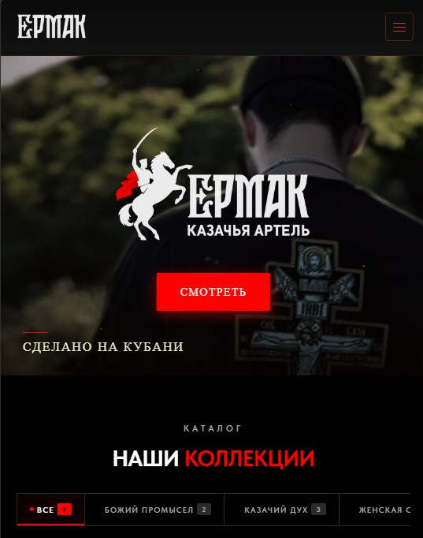
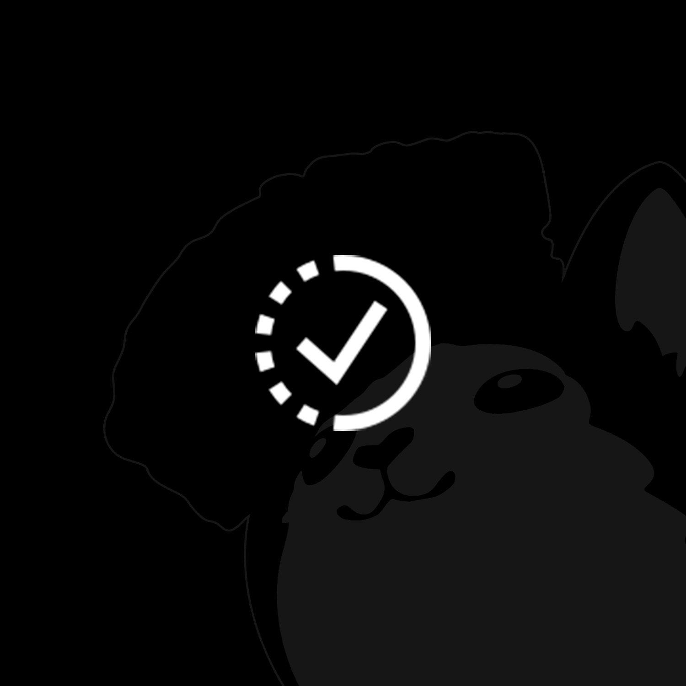
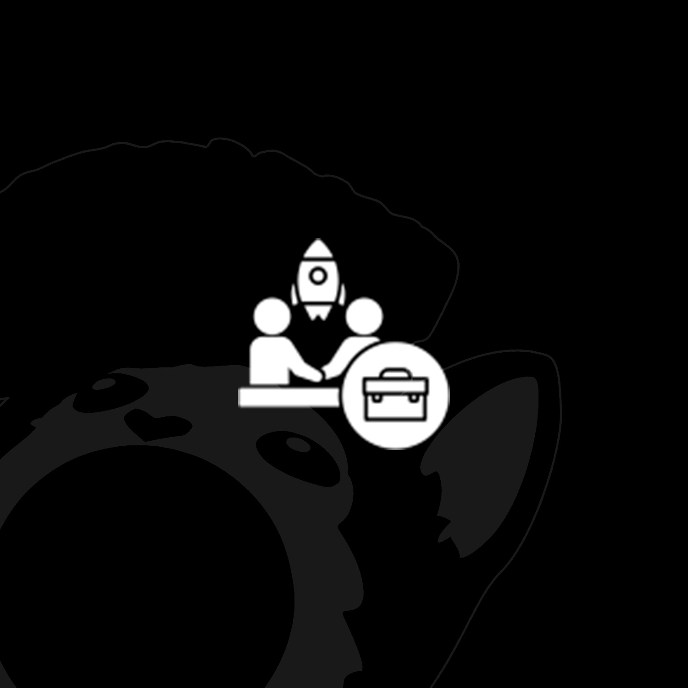
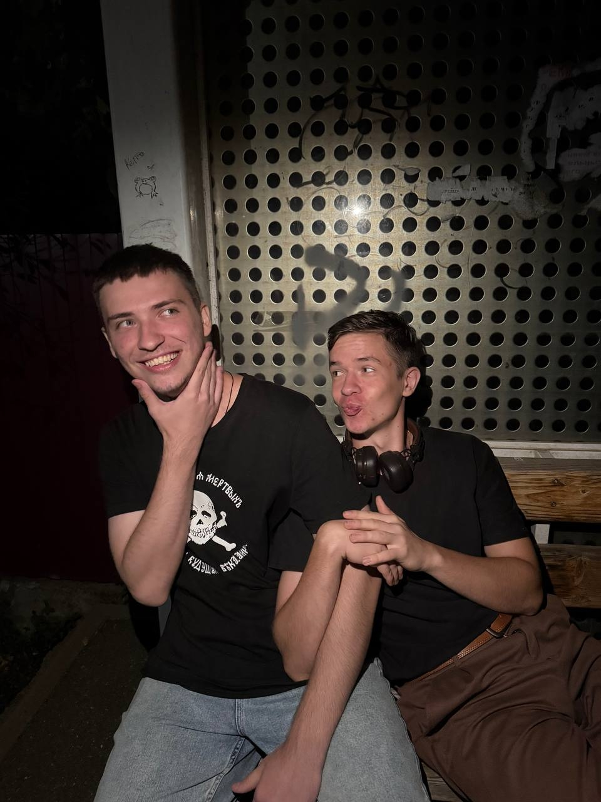

Цифровая студия. Сайты · Айдентика · Видео · Реклама
Сайты, дизайн, брендинг, видео и digital-решения для бизнеса — от первого экрана до запуска рекламы.


подначитьМы — цифровая студия полного цикла: проектируем, оформляем и запускаем сайты, визуальные системы и рекламу для бизнеса. Мы делаем так, чтобы увидев продукт, Вам захотелось кричать от радости.1
Го́йда (др. рус. междометие) — восклицание радости, искреннего одобрения.
Дизайн и разработка: лендинги, корпоративные сайты, интернет-магазины.
Логотип, фирменный стиль и визуальная система бренда.
Монтаж, motion, цвет и звук для роликов, Reels и презентаций.
Настройка, ведение и оптимизация контекстной рекламы.
Собираем структуру, визуальный язык и сценарии пользователя в одну систему. Наведите на этап — карточка подскажет, что именно мы делаем и зачем.
Портфолио пополняется — каждый новый проект получает собственную страницу с задачами и результатом.

E-commerce · site 01Интернет-магазин бренда одежды с каталогом коллекций, карточками товаров и акцентом на характер бренда.
ermakwear.shop ↗
02Сюда можно положить свою фотографию проекта — достаточно заменить локальный файл.

03Ещё одна обложка для нового проекта студии. Файл можно заменить в папке img/works.
Не набор обещаний, а цепочка решений: каждый следующий шаг опирается на предыдущий.

Расскажите, что хотите сделать. Мы быстро выйдем на связь и уже там обсудим задачу, сроки и формат работы.